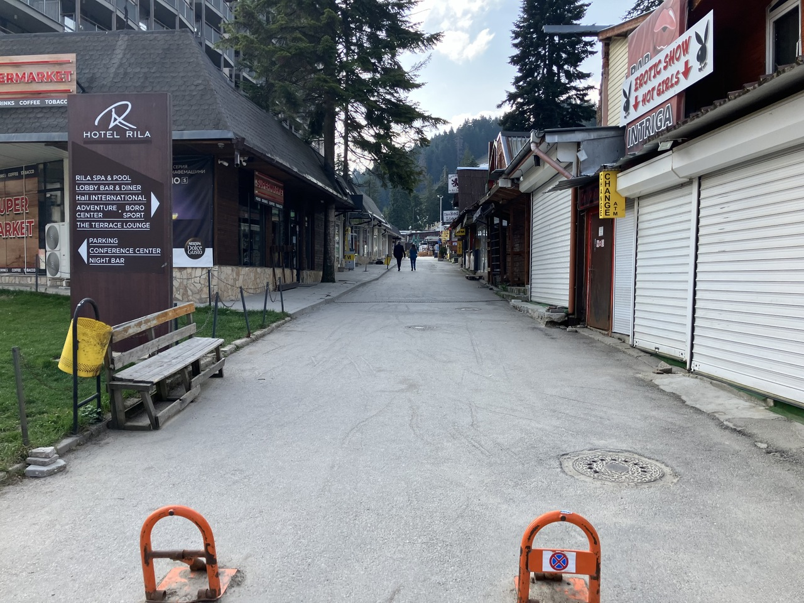
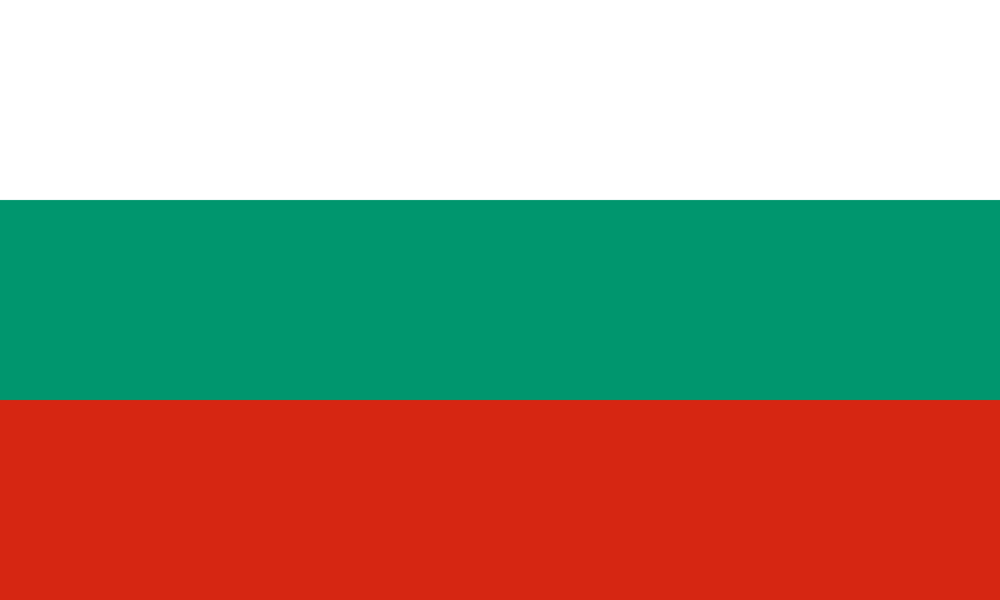
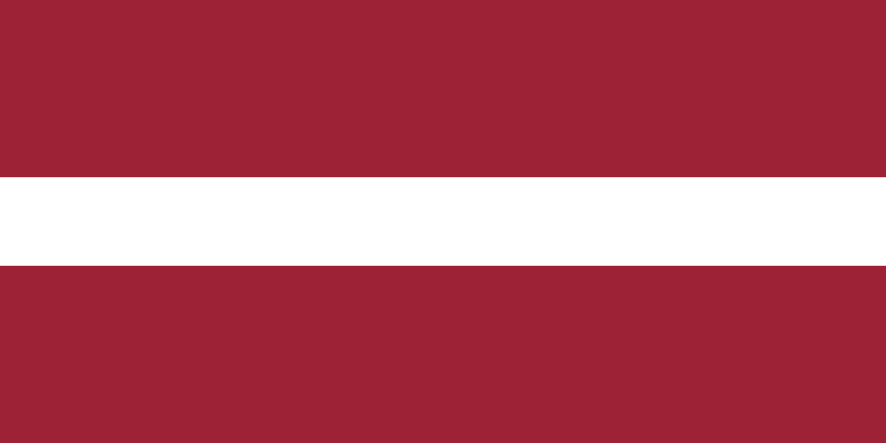
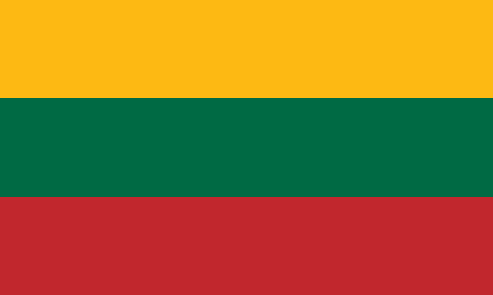

Zdobywamy Koronę Gór Europy — najwyższe szczyty wszystkich krajów kontynentu. Tutaj znajdziesz relacje, mapę i listę celów na kolejne wyprawy.
"Pamiętaj, że szczyt to tylko połowa drogi."
5 z 46 szczytów Korony Gór Europy zdobytych — pełną listę celów znajdziesz na stronie Góry.


BułgariaWejście na najwyższy szczyt Bułgarii i całych Bałkanów — 12 godzin walki ze śniegiem, wątpliwościami i samym sobą.
✅ zdobyty Serbia
SerbiaNajwyższy szczyt pasma Starej Płaniny, na granicy serbsko-bułgarskiej.
✅ zdobyty Estonia
EstoniaNajwyższy punkt Estonii i całego regionu bałtyckiego, z wieżą widokową na szczycie.
✅ zdobyty
Najwyższy punkt Łotwy w regionie Vidzeme, popularny również jako ośrodek narciarski.
✅ zdobyty
Najwyższy punkt Litwy, niedaleko Wilna — z wieżą widokową na szczycie.
✅ zdobyty